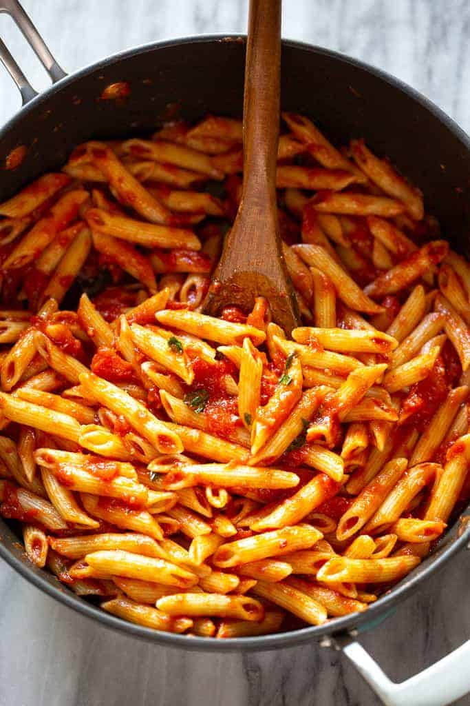

Penne Arrabbiata

Description
This spicy Italian Penne Arrabbiata is homemade in 20 minutes! It makes a great vegetarian dish, served with fresh parmesan, basil and parsley.
Ingredients
- 1 pound penne rigate
- 3 Tablespoons olive oil
- 3 cloves garlic
- 3/4 teaspoon crushed red pepper flakes , depending on how spicy you want it
- 1 28 ounce can whole peeled tomatoes (or 1 1/2 cups fresh chopped tomatoes)
- 2 Tablespoons tomato paste
- 6 fresh basil leaves , chopped
- 1/2 cup freshly grated parmesan cheese (or pecorino cheese), for topping
- 1/3 cup fresh chopped parsley (finely chopped), for topping
Steps
- Cook pasta in a large pot of boiling water, according to package instructions, until tender.
- Meanwhile, heat olive oil in a large skillet over medium heat. Add garlic and crushed red pepper; cook, stirring for 30 seconds.
- Add tomatoes, crushing them roughly with the back of a wooden spoon, and tomato paste.
- Bring to a simmer over low heat and cook for 5-10 minutes. Remove from heat and add fresh chopped basil.
- When pasta is cooked, drain the water and add it to the sauce. Toss well. Taste and add more red pepper flakes or salt and pepper, if needed.
- Serve immediately topped with a generous portion of grated pecorino or parmesan cheese and fresh chopped parsley.